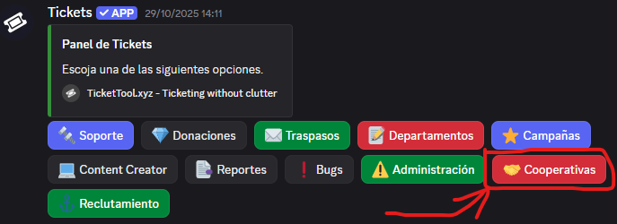
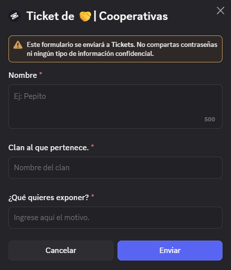

DISCORD
Únete a la
Compañía Branoc.
Completa tu reclutamiento en nuestro Discord oficial.
Entrar al DiscordCOMPAÑÍA BRANOC
Discord, equipo de staff, comunicaciones y cooperativas de clanes.
DISCORD
Completa tu reclutamiento en nuestro Discord oficial.
Entrar al DiscordTEAMSPEAK 3
Para mejorar nuestra calidad in-game, usamos la aplicación de TeamSpeak 3. La puedes descargar con el siguiente enlace.
Recomendamos encarecidamente usar la versión de TS3, no TS6, ya que puede dar problemas con los mods y no te dejará entrar al servidor.
Descargar TeamSpeak 3 ↗Una vez descargado, accede a nuestro servidor colocando la siguiente dirección:
ts3.comandobranoc.esEQUIPO
La Compañía Branoc dispone de un equipo de staff comprometido, serio y objetivo. Disponemos de varios integrantes, como administradores, moderadores, técnicos de mods y soporte, donde cada uno tiene una misión concreta.
En la Compañía Branoc queremos que todo salga perfecto para nuestra comunidad, creando así un espacio seguro y libre de toxicidad.
Ayúdanos a protegerte, reportando cualquier inconveniente a nuestro equipo y lo solucionaremos lo más rápido posible.
Si tú también quieres ser miembro del staff, postula cuando haya vacantes disponibles.
EVENTOS Y CAMPAÑAS CONJUNTAS
Bienvenido al apartado de Cooperativas de clanes. Antes de nada, agradecerte que hayas pensado en Compañía Branoc para realizar un evento y/o campaña conjunta.
Para poder hacer una cooperación, es tan sencillo como acceder a nuestro Discord oficial haciendo clic en el siguiente botón:
CooperativasUna vez dentro, ve a la sección de tickets y pulsa sobre Cooperativas.

Ahí, se te abrirá una ventana emergente de Discord con un pequeño formulario. Rellénalo y pulsa en Enviar.

Acto seguido, nuestra Administración se pondrá en contacto contigo para aclarar la petición y llegar a un acuerdo.